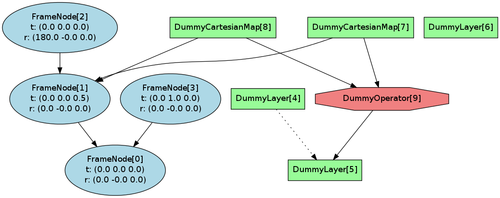

The main envire class is envire::Environment. It holds all the elements of the environment and stores them in the different structures. In general, all elements that are stored in an environment are derived from envire::EnvironmentItem. Object ownership of EnvironmentItem is shared through the used of boost::intrusive_ptr reference counting. Holding such a pointer is simplified through the use of the ::Ptr typedef, which is available in all classes derived from EnvironmentItem. Creating and attaching an EnvironmentItem works like this
#include <envire/Core.hpp>
using namespace envire;
...
// create an Environment on the stack
Environment env;
// EnvironmentItem objects (such as FrameNode)
// need to be created on the heap.
// The FrameNode::Ptr type performs the reference
// counting for shared ownership
FrameNode::Ptr frame = new FrameNode;
// This will make the frame known to the environment
env.attachItem( frame );
As mentioned in the overview page, there are four different types of objects that the environment does distinguish. FrameNode, CartesianMap, Layer and Operator. Each of these objects has a different structure that the environment stores.
The FrameNodes are organized in a tree structure. Any environment always has at least one FrameNode, which is the root FrameNode. This one can be considered the world origin reference frame. All FrameNodes that are added to the environment need to be attached to a parent node, so that operations relating it to other frames are valid. Further, each CartesianMap can be assigned to be associated with one FrameNode.
The LayerTree provides structure within maps. Like the FrameNode structure, this is a tree. However, there is no single tree root, so multiple trees are allowed here. A root node is a layer that does not have a parent. This structure is used to store relationships within maps, e.g. level of detail or other types of hierarchical maps.
The OperatorGraph is a structure that links operators to layers. Each operator can have multiple inputs and outputs. Operators work through lazy handling of map updates. So that for a certain input map, if the map is flagged as modified, the operator can decide if and what of the output needs to be updated. This is useful in situations, where the structure of the environment changes, and this has implications on derived information.
NOTE: The OperatorGraph functionality is currently not fully implemented. The structure for holding operators exists, but no automatic chaining of lazy operations or partial updates is implemented, yet.
The Environment provides a number of operations to modify the listed structures. All operations, where it makes sense, also have the feature that they will automatically attach an item to the environment if this has not yet happened.
The following is an example which is taken from the envire/test/unit/core.hpp unit tests and the resulting structure visualised with the GraphViz file generation class.
BOOST_AUTO_TEST_CASE( environment )
{
// set up an environment
boost::scoped_ptr<Environment> env( new Environment() );
// an environment should always have a root node
BOOST_CHECK( env->getRootNode() );
// create some child framenodes
FrameNode *fn1, *fn2, *fn3;
fn1 = new FrameNode();
fn1->setTransform(
Eigen::Affine3d(
Eigen::Translation3d( 0.0, 0.0, 0.5 )) );
fn2 = new FrameNode();
fn2->setTransform(
Eigen::Affine3d(
Eigen::Quaterniond(0.0, 1.0, 0.0, 0.0 )));
fn3 = new FrameNode();
fn3->setTransform(
Eigen::Affine3d(
Eigen::Translation3d(0.0, 1.0, 0.0)));
// attach explicitely
env->attachItem( fn1 );
env->addChild( env->getRootNode(), fn1 );
// implicit attachment
env->addChild( fn1, fn2 );
// setup the rest of the framenodes
env->addChild( env->getRootNode(), fn3 );
// perform a relative transformation
FrameNode::TransformType rt1 =
env->relativeTransform(fn2, fn1);
FrameNode::TransformType rt2 =
env->relativeTransform(fn2, fn3);
// now do the same for layers
Layer *l1, *l2, *l3;
l1 = new DummyLayer();
l2 = new DummyLayer();
l3 = new DummyLayer();
env->attachItem( l1 );
env->addChild( l1, l2 );
env->attachItem(l3);
// CartesianMaps should work the same
CartesianMap *m1, *m2;
m1 = new DummyCartesianMap();
m2 = new DummyCartesianMap();
env->attachItem( m1 );
env->attachItem( m2 );
env->setFrameNode( m1, fn1 );
env->setFrameNode( m2, fn1 );
// now to operators
Operator *o1;
o1 = new DummyOperator();
env->attachItem( o1 );
env->addInput( o1, m1 );
env->addInput( o1, m2 );
env->addOutput( o1, l2 );
GraphViz gv;
gv.writeToFile( env.get(), "build/test/env.dot" );
}

Envire provides a system for serialization and deserialization. The functionality is capsuled in a serialization class. In order to save an environment you can use the following method
#incude <envire/Core.hpp>
using namespace envire;
...
Serialization so;
// create the environment (and store in scoped ptr)
boost::scoped_ptr<Environment> env( new Environment() );
// fill the environment
...
// write the environment to disk
so.serialize(env.get(), "build/test/");
Loading the environment is equally simple. The unserialize method will take a file name and return a pointer to the newly created environment. Object ownership is passed to the caller, who is expected to delete the object after use (using a scoped_ptr in this example).
// load the environment
boost::scoped_ptr<Environment>
env( so.unserialize( "build/test" ) );
The way envire writes the files to disk is fairly simple. The file name provided is the name of a directory. Envire will use the full directory for its own use. It will generate a scene.yml file, which stores the structure of the environment in a yaml file format. This file can be easily adapted for small changes. The scene.yml may also contain parameters relevant to the particular EnvironmentItem, like e.g. a frame transformation for a FrameNode, or flags for an operator.
Every EnvironmentItem that is attached to the environment gets an id, which is unique in that environment. The id is used when serialized to reference the object.
There are two ways EnvironmentItems store information about themselves. One is the structural information which ends up in the scene.yml, and also includes parameters. Further, items can (but don’t need to) store information in a separate file. This is mostly useful for maps. Each item can pick their own format, so using formats which are readable by others is recommended for maps.